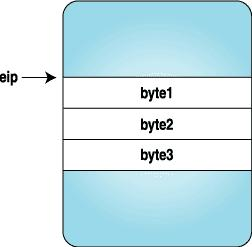
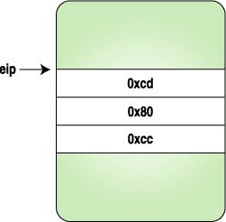
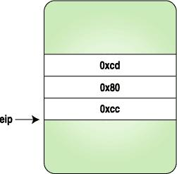
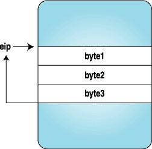

In Part II of his series on ptrace, Pradeep tackles the more advanced topics of setting breakpoints and injecting code into running processes.
In Part I of this article [LJ, November 2002], we saw how ptrace can be used to trace system calls and change system call arguments. In this article, we investigate advanced techniques like setting breakpoints and injecting code into running programs. Debuggers use these methods to set up breakpoints and execute debugging handlers. As with Part I, all code in this article is i386 architecture-specific.
In Part I, we ran the process to be traced as a child after calling ptrace(PTRACE_TRACEME, ..). If you simply wanted to see how the process is making system calls and trace the program, this would be sufficient. If you want to trace or debug a process already running, then ptrace(PTRACE_ATTACH, ..) should be used.
When a ptrace(PTRACE_ATTACH, ..) is called with the pid to be traced, it is roughly equivalent to the process calling ptrace(PTRACE_TRACEME, ..) and becoming a child of the tracing process. The traced process is sent a SIGSTOP, so we can examine and modify the process as usual. After we are done with modifications or tracing, we can let the traced process continue on its own by calling ptrace(PTRACE_DETACH, ..).
The following is the code for a small example tracing program:
int main()
{ int i;
for(i = 0;i < 10; ++i) {
printf("My counter: %d\n", i);
sleep(2);
}
return 0;
}
Save the program as dummy2.c. Compile and run it:
gcc -o dummy2 dummy2.c ./dummy2 &Now, we can attach to dummy2 by using the code below:
#include <sys/ptrace.h>
#include <sys/types.h>
#include <sys/wait.h>
#include <unistd.h>
#include <linux/user.h> /* For user_regs_struct
etc. */
int main(int argc, char *argv[])
{ pid_t traced_process;
struct user_regs_struct regs;
long ins;
if(argc != 2) {
printf("Usage: %s <pid to be traced>\n",
argv[0], argv[1]);
exit(1);
}
traced_process = atoi(argv[1]);
ptrace(PTRACE_ATTACH, traced_process,
NULL, NULL);
wait(NULL);
ptrace(PTRACE_GETREGS, traced_process,
NULL, ®s);
ins = ptrace(PTRACE_PEEKTEXT, traced_process,
regs.eip, NULL);
printf("EIP: %lx Instruction executed: %lx\n",
regs.eip, ins);
ptrace(PTRACE_DETACH, traced_process,
NULL, NULL);
return 0;
}
The above program simply attaches to a process, waits for it to
stop, examines its eip (instruction pointer) and detaches.
To inject code use ptrace(PTRACE_POKETEXT, ..) and ptrace(PTRACE_POKEDATA, ..) after the traced process has stopped.
How do debuggers set breakpoints? Generally, they replace the instruction to be executed with a trap instruction, so that when the traced program stops, the tracing program, the debugger, can examine it. It will replace the original instruction once the tracing program continues the traced process. Here's an example:
#include <sys/ptrace.h>
#include <sys/types.h>
#include <sys/wait.h>
#include <unistd.h>
#include <linux/user.h>
const int long_size = sizeof(long);
void getdata(pid_t child, long addr,
char *str, int len)
{ char *laddr;
int i, j;
union u {
long val;
char chars[long_size];
}data;
i = 0;
j = len / long_size;
laddr = str;
while(i < j) {
data.val = ptrace(PTRACE_PEEKDATA, child,
addr + i * 4, NULL);
memcpy(laddr, data.chars, long_size);
++i;
laddr += long_size;
}
j = len % long_size;
if(j != 0) {
data.val = ptrace(PTRACE_PEEKDATA, child,
addr + i * 4, NULL);
memcpy(laddr, data.chars, j);
}
str[len] = '\0';
}
void putdata(pid_t child, long addr,
char *str, int len)
{ char *laddr;
int i, j;
union u {
long val;
char chars[long_size];
}data;
i = 0;
j = len / long_size;
laddr = str;
while(i < j) {
memcpy(data.chars, laddr, long_size);
ptrace(PTRACE_POKEDATA, child,
addr + i * 4, data.val);
++i;
laddr += long_size;
}
j = len % long_size;
if(j != 0) {
memcpy(data.chars, laddr, j);
ptrace(PTRACE_POKEDATA, child,
addr + i * 4, data.val);
}
}
int main(int argc, char *argv[])
{ pid_t traced_process;
struct user_regs_struct regs, newregs;
long ins;
/* int 0x80, int3 */
char code[] = {0xcd,0x80,0xcc,0};
char backup[4];
if(argc != 2) {
printf("Usage: %s <pid to be traced>\n",
argv[0], argv[1]);
exit(1);
}
traced_process = atoi(argv[1]);
ptrace(PTRACE_ATTACH, traced_process,
NULL, NULL);
wait(NULL);
ptrace(PTRACE_GETREGS, traced_process,
NULL, ®s);
/* Copy instructions into a backup variable */
getdata(traced_process, regs.eip, backup, 3);
/* Put the breakpoint */
putdata(traced_process, regs.eip, code, 3);
/* Let the process continue and execute
the int 3 instruction */
ptrace(PTRACE_CONT, traced_process, NULL, NULL);
wait(NULL);
printf("The process stopped, putting back "
"the original instructions\n");
printf("Press <enter> to continue\n");
getchar();
putdata(traced_process, regs.eip, backup, 3);
/* Setting the eip back to the original
instruction to let the process continue */
ptrace(PTRACE_SETREGS, traced_process,
NULL, ®s);
ptrace(PTRACE_DETACH, traced_process,
NULL, NULL);
return 0;
}
Here we replace the three bytes with the code for a trap instruction, and when the process stops, we replace the original instructions and reset the eip to original location. Figures 1-4 clarify how the instruction stream looks when above program is executed.

|

|
Figure 1. After the Process Is Stopped | Figure 2. After the Trap Instruction Bytes Are Set |

|

|
Figure 3. Trap Is Hit and Control Is Given to the Tracing Program | Figure 4. After the Original Instructions Are Replaced and eip Is Reset to the Original Location |
Now that we have a clear idea of how breakpoints are set, let's inject some code bytes into a running program. These code bytes will print “hello world”.
The following program is a simple “hello world” program with modifications to fit our needs. Compile the following program with:
gcc -o hello hello.c
void main()
{
__asm__("
jmp forward
backward:
popl %esi # Get the address of
# hello world string
movl $4, %eax # Do write system call
movl $2, %ebx
movl %esi, %ecx
movl $12, %edx
int $0x80
int3 # Breakpoint. Here the
# program will stop and
# give control back to
# the parent
forward:
call backward
.string \"Hello World\\n\""
);
}
The jumping backward and forward here is required to find the address of the “hello world” string.
We can get the machine code for the above assembly from GDB. Fire up GDB and disassemble the program:
(gdb) disassemble main Dump of assembler code for function main: 0x80483e0 <main>: push %ebp 0x80483e1 <main+1>: mov %esp,%ebp 0x80483e3 <main+3>: jmp 0x80483fa <forward> End of assembler dump. (gdb) disassemble forward Dump of assembler code for function forward: 0x80483fa <forward>: call 0x80483e5 <backward> 0x80483ff <forward+5>: dec %eax 0x8048400 <forward+6>: gs 0x8048401 <forward+7>: insb (%dx),%es:(%edi) 0x8048402 <forward+8>: insb (%dx),%es:(%edi) 0x8048403 <forward+9>: outsl %ds:(%esi),(%dx) 0x8048404 <forward+10>: and %dl,0x6f(%edi) 0x8048407 <forward+13>: jb 0x8048475 0x8048409 <forward+15>: or %fs:(%eax),%al 0x804840c <forward+18>: mov %ebp,%esp 0x804840e <forward+20>: pop %ebp 0x804840f <forward+21>: ret End of assembler dump. (gdb) disassemble backward Dump of assembler code for function backward: 0x80483e5 <backward>: pop %esi 0x80483e6 <backward+1>: mov $0x4,%eax 0x80483eb <backward+6>: mov $0x2,%ebx 0x80483f0 <backward+11>: mov %esi,%ecx 0x80483f2 <backward+13>: mov $0xc,%edx 0x80483f7 <backward+18>: int $0x80 0x80483f9 <backward+20>: int3 End of assembler dump.
We need to take the machine code bytes from main+3 to backward+20, which is a total of 41 bytes. The machine code can be seen with the x command in GDB:
(gdb) x/40bx main+3 <main+3>: eb 15 5e b8 04 00 00 00 <backward+6>: bb 02 00 00 00 89 f1 ba <backward+14>: 0c 00 00 00 cd 80 cc <forward+1>: e6 ff ff ff 48 65 6c 6c <forward+9>: 6f 20 57 6f 72 6c 64 0aNow we have the instruction bytes to be executed. Why wait? We can inject them using the same method as in the previous example. The following is the source code; only the main function is given here:
int main(int argc, char *argv[])
{ pid_t traced_process;
struct user_regs_struct regs, newregs;
long ins;
int len = 41;
char insertcode[] =
"\xeb\x15\x5e\xb8\x04\x00"
"\x00\x00\xbb\x02\x00\x00\x00\x89\xf1\xba"
"\x0c\x00\x00\x00\xcd\x80\xcc\xe8\xe6\xff"
"\xff\xff\x48\x65\x6c\x6c\x6f\x20\x57\x6f"
"\x72\x6c\x64\x0a\x00";
char backup[len];
if(argc != 2) {
printf("Usage: %s <pid to be traced>\n",
argv[0], argv[1]);
exit(1);
}
traced_process = atoi(argv[1]);
ptrace(PTRACE_ATTACH, traced_process,
NULL, NULL);
wait(NULL);
ptrace(PTRACE_GETREGS, traced_process,
NULL, ®s);
getdata(traced_process, regs.eip, backup, len);
putdata(traced_process, regs.eip,
insertcode, len);
ptrace(PTRACE_SETREGS, traced_process,
NULL, ®s);
ptrace(PTRACE_CONT, traced_process,
NULL, NULL);
wait(NULL);
printf("The process stopped, Putting back "
"the original instructions\n");
putdata(traced_process, regs.eip, backup, len);
ptrace(PTRACE_SETREGS, traced_process,
NULL, ®s);
printf("Letting it continue with "
"original flow\n");
ptrace(PTRACE_DETACH, traced_process,
NULL, NULL);
return 0;
}
In the previous example we injected the code directly into the executing instruction stream. However, debuggers can get confused with this kind of behaviour, so let's find the free space in the process and inject the code there. We can find free space by examining the /proc/pid/maps file of the traced process. The following function will find the starting address of this map:
long freespaceaddr(pid_t pid)
{
FILE *fp;
char filename[30];
char line[85];
long addr;
char str[20];
sprintf(filename, "/proc/%d/maps", pid);
fp = fopen(filename, "r");
if(fp == NULL)
exit(1);
while(fgets(line, 85, fp) != NULL) {
sscanf(line, "%lx-%*lx %*s %*s %s", &addr,
str, str, str, str);
if(strcmp(str, "00:00") == 0)
break;
}
fclose(fp);
return addr;
}
Each line in /proc/pid/maps represents a mapped region of the process. An entry in /proc/pid/maps looks like this:
map start-mapend protection offset device inode process file 08048000-0804d000 r-xp 00000000 03:08 66111 /opt/kde2/bin/kdeinitThe following program injects code into free space. It's similar to the previous injection program except the free space address is used for keeping our new code. Here is the source code for the main function:
int main(int argc, char *argv[])
{ pid_t traced_process;
struct user_regs_struct oldregs, regs;
long ins;
int len = 41;
char insertcode[] =
"\xeb\x15\x5e\xb8\x04\x00"
"\x00\x00\xbb\x02\x00\x00\x00\x89\xf1\xba"
"\x0c\x00\x00\x00\xcd\x80\xcc\xe8\xe6\xff"
"\xff\xff\x48\x65\x6c\x6c\x6f\x20\x57\x6f"
"\x72\x6c\x64\x0a\x00";
char backup[len];
long addr;
if(argc != 2) {
printf("Usage: %s <pid to be traced>\n",
argv[0], argv[1]);
exit(1);
}
traced_process = atoi(argv[1]);
ptrace(PTRACE_ATTACH, traced_process,
NULL, NULL);
wait(NULL);
ptrace(PTRACE_GETREGS, traced_process,
NULL, ®s);
addr = freespaceaddr(traced_process);
getdata(traced_process, addr, backup, len);
putdata(traced_process, addr, insertcode, len);
memcpy(&oldregs, ®s, sizeof(regs));
regs.eip = addr;
ptrace(PTRACE_SETREGS, traced_process,
NULL, ®s);
ptrace(PTRACE_CONT, traced_process,
NULL, NULL);
wait(NULL);
printf("The process stopped, Putting back "
"the original instructions\n");
putdata(traced_process, addr, backup, len);
ptrace(PTRACE_SETREGS, traced_process,
NULL, &oldregs);
printf("Letting it continue with "
"original flow\n");
ptrace(PTRACE_DETACH, traced_process,
NULL, NULL);
return 0;
}
So what happens within the kernel now? How is ptrace implemented? This section could be an article on its own; however, here's a brief description of what happens.
When a process calls ptrace with PTRACE_TRACEME, the kernel sets up the process flags to reflect that it is being traced:
Source: arch/i386/kernel/ptrace.c
if (request == PTRACE_TRACEME) {
/* are we already being traced? */
if (current->ptrace & PT_PTRACED)
goto out;
/* set the ptrace bit in the process flags. */
current->ptrace |= PT_PTRACED;
ret = 0;
goto out;
}
When a system call entry is done, the kernel checks this flag and calls the trace system call if the process is being traced. The gory assembly details can be found in arch/i386/kernel/entry.S.
Now, we are in the sys_trace() function as defined in arch/i386/kernel/ptrace.c. It stops the child and sends a signal to the parent notifying that the child is stopped. This wakes up the waiting parent, and it does the ptrace magic. Once the parent is done, and it calls ptrace(PTRACE_CONT, ..) or ptrace(PTRACE_SYSCALL, ..), it wakes up the child by calling the scheduler function wake_up_process(). Some other architectures can implement this by sending a SIGCHLD to child.
ptrace may appear to be magic to some people, because it can examine and modify a running program. It is generally used by debuggers and system call tracing programs, such as ptrace. It opens up interesting possibilities for doing user-mode extensions as well. There have been a lot of attempts to extend the operating system on the user level. See Resources to read about UFO, a user-level extension to filesystems. ptrace also is used to employ security mechanisms.
All example code from this article and from Part I is available as a tar archive on the Linux Journal FTP site [ftp.linuxjournal.com/pub/lj/listings/issue104/6210.tgz].